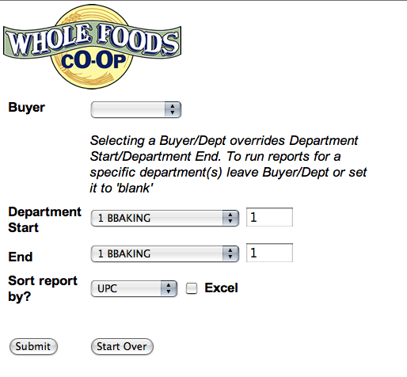
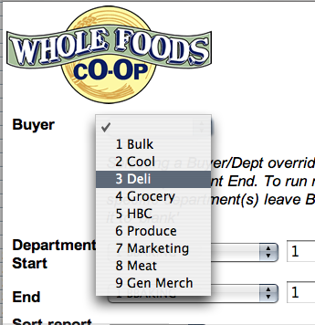
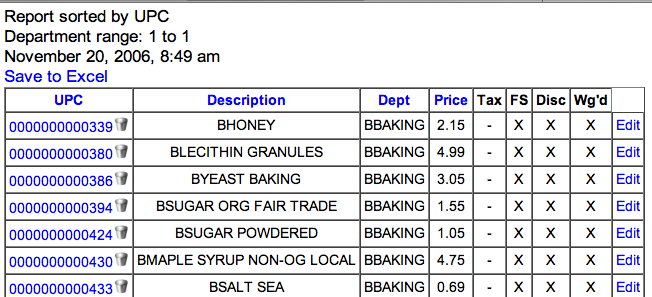
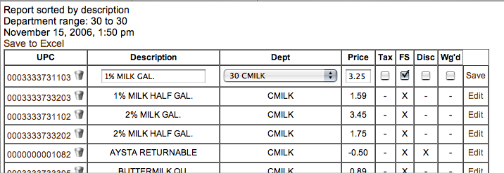
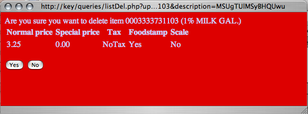

How to use the Product List Page
Below is a screenshot of the interface for the Product List Page. The page can be accessed directly by navigating to http://key/queries/lisaQuery.php.

Definitions:
Buyer - Report will include movement of all items for given buyer/department. Overrides department settings.
Department Start/End - Report will include the movement of all items in departments included in range.
Sort report by? - Set to sort report by UPC, names, etc
To genereate product list report for specific buyer/Dept
Select department/buyer from dropdown

Once the buyer has been set, set the 'Sort report by?' field and submit.
To generate product list report for specific department range
Department ranges may be set by entering department numbers
Once the department range is set, setting the 'Sort report by?' field is used to set the default sort of the report.
Using the Product List Report

The image above shows the look of the product list report. The header for the report explains how it is currently sorted, the date of the report and the department range. The report may also be sent to Excel, by clicking the 'Save to Excel' link. The default sort for this report is by UPC. The report can be resorted by clicking any of the header fields (UPC, Description, etc).
Quick edits to items in this list can be done by clicking the 'Edit' link on the right hand of the item. This will change the line to an input format. Fields that
can be edited this way are: description, department, price and tax, food stamp, discount and weighable status. When completed making changes, click 'Save' on the right to submit the changes.

More advanced edits (like code edits, deli tax, manufacturer, etc) can be done by clicking the upc. This links to the Price Change page for that item.
Items may also be deleted from the product table by clicking the trashcan next to the UPC. A dialogue window will appear confirming your intention to delete the item.

Clicking 'Yes' will permanently delete the item from the product table. Clicking 'No' will save your item from being deleted from the product table.